https://github.com/msucimaker3112/energy-cockpitenergy-cockpit.js aus dem Release in config/www/ kopieren/local/energy-cockpit.js, Typ JavaScript-Modul| Karte | Zeigt |
|---|---|
energy-cockpit-flow-card | Energiefluss: Solar (auch zweite Anlage, pv2), Netz, Batterie, Haus, Verbraucher |
energy-cockpit-devices-card | Räume und Geräte mit Live-Leistung, Kosten, Standby |
energy-cockpit-stats-card | Ersparnis, Autarkie, Amortisation, Grundlast, Monatsvergleich |
energy-cockpit-room-card | Raum-Abrechnung: Abschlag, Hochrechnung, Live-Leistung, Herkunft Netz/Batterie/PV, Grundlast, Betriebszeiten, Monatsarchiv |
type: custom:energy-cockpit-flow-card pv: entity: sensor.pv_leistung grid: entity: sensor.netz_leistung battery: power: sensor.batterie_leistung soc: sensor.batterie_ladestand grid_price: input_number.strompreis
| Problem | Lösung |
|---|---|
| Karte nicht in der Liste | Ressource prüfen (Typ Modul), Strg + F5 |
| Netz: Bezug als Einspeisung | Vorzeichen umkehren beim Netz |
| Keine Kosten sichtbar | grid_price konfigurieren |
| Werte zeigen "—" | Sensor nicht verfügbar oder keine W/kW-Einheit |
| Statistik leer | Zähler brauchen state_class und Langzeitstatistik |
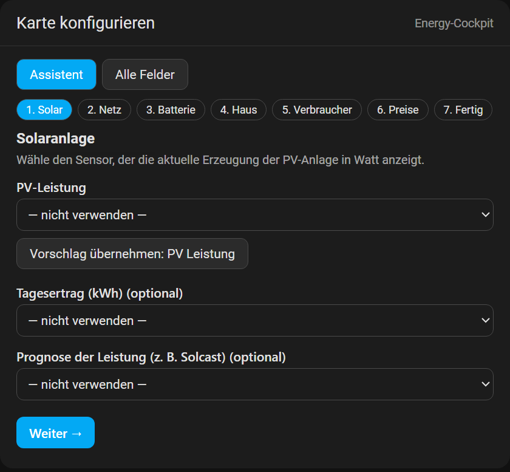
1. Sensor wählen. Vorschläge stehen oben. Mit Vorschlag übernehmen trägst du den wahrscheinlichsten Sensor mit einem Klick ein. Oben springst du zwischen den Schritten.
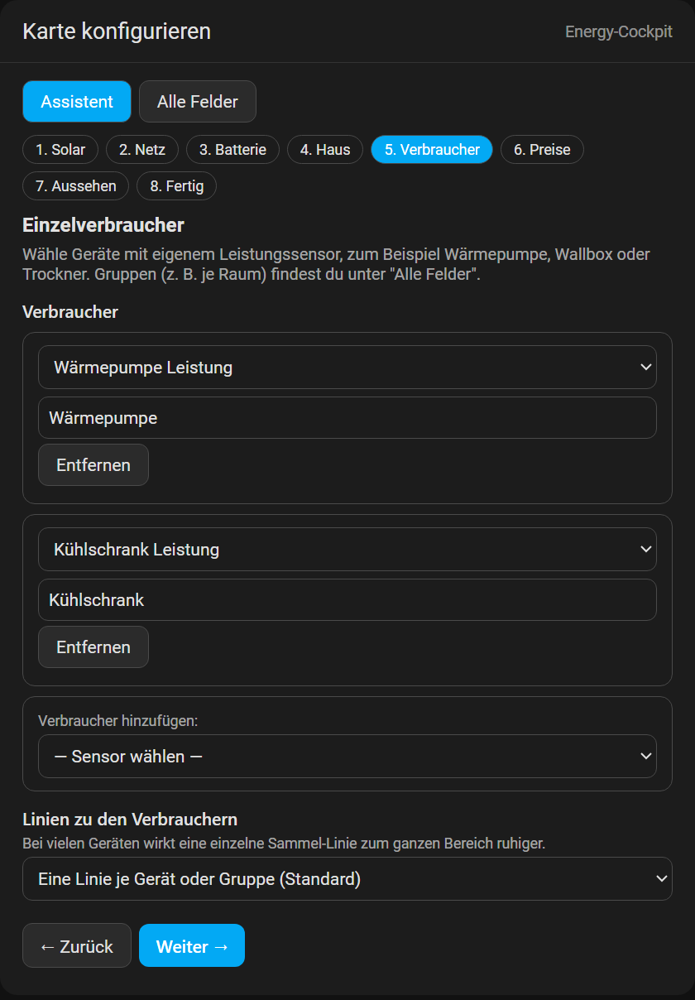
2. Verbraucher hinzufügen. Wärmepumpe, Wallbox, Trockner: Sensor wählen, Name anpassen. Der aktuelle Wert steht in der Liste.
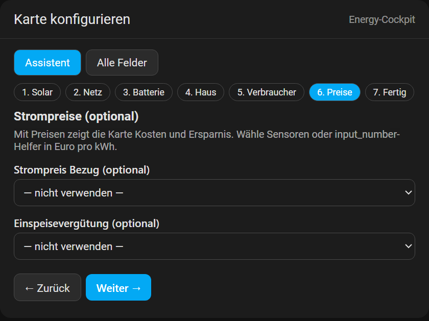
3. Preise. Strompreis und Einspeisevergütung als Sensor oder input_number schalten Kosten und Ersparnis frei.
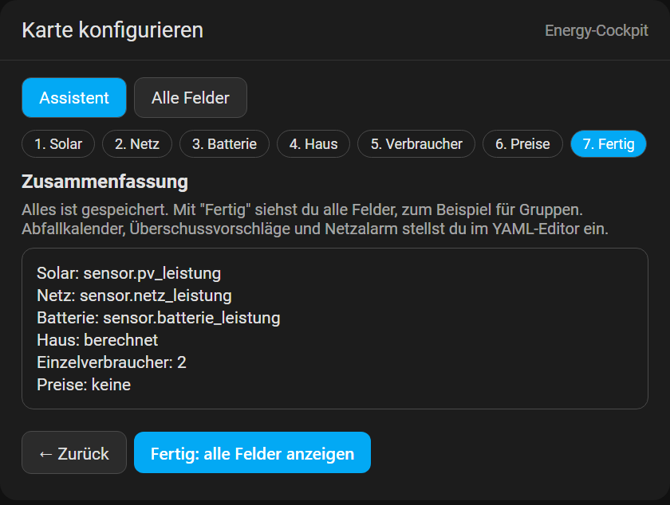
4. Zusammenfassung. Alles ist gespeichert. Fertig zeigt alle Felder für Gruppen und Feinheiten.
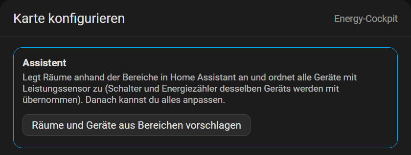
Geräte & Verbrauch: Räume und Geräte aus Bereichen vorschlagen legt Räume anhand der Bereiche in Home Assistant an und ordnet alle Geräte mit Leistungssensor zu. Schalter und Energiezähler desselben Geräts werden übernommen.
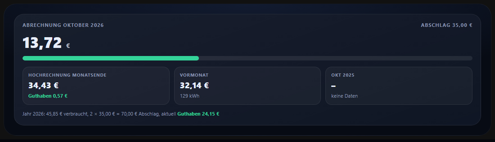
Abrechnung und Hochrechnung. Kosten gegen Abschlag, Hochrechnung bis Monatsende, Guthaben oder Nachzahlung, Vergleich mit Vormonat und Vorjahr.
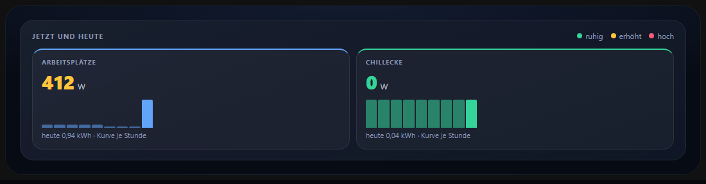
Jetzt und heute. Live-Leistung je Bereich, Ampelfarbe, Tageskurve.
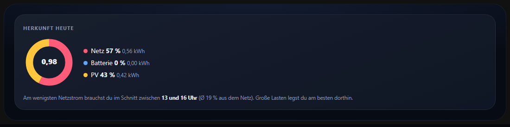
Herkunft heute. Netz, Batterie und PV, dazu die beste Zeit für große Lasten.
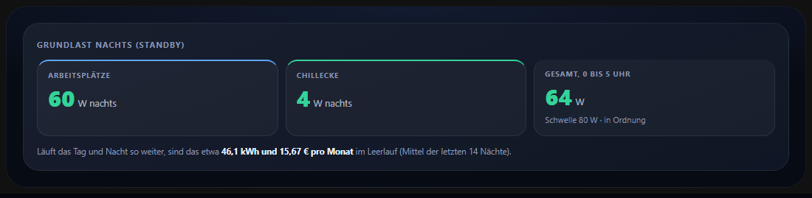
Grundlast nachts. Leerlauf zwischen 0 und 5 Uhr, hochgerechnet auf kWh und Euro.
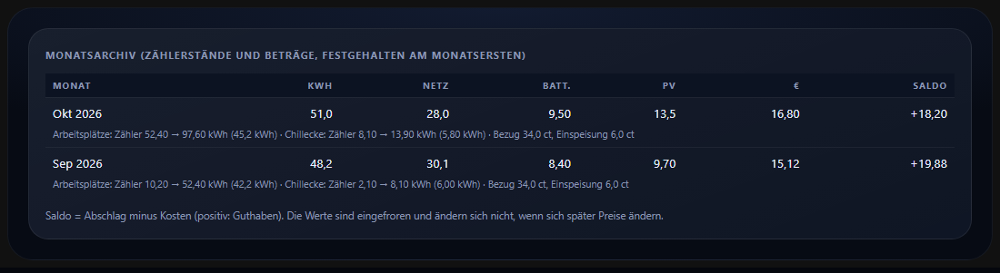
Monatsarchiv. Eingefrorene Monatswerte mit Zählerständen, Preisen und Saldo.
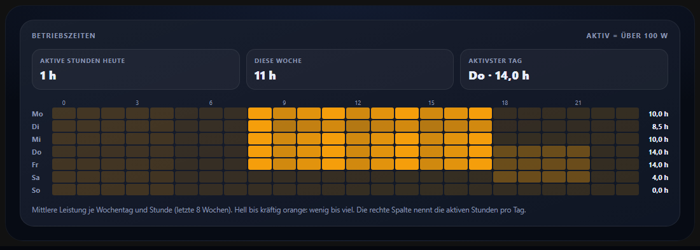
Betriebszeiten. Aktive Stunden heute, Woche und je Wochentag, dazu die Heatmap Wochentag × Stunde der letzten 8 Wochen.